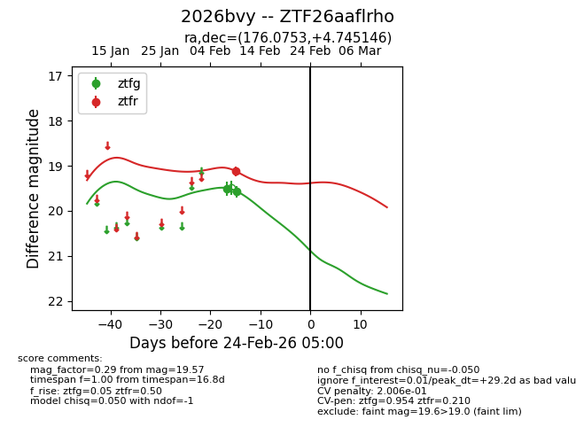
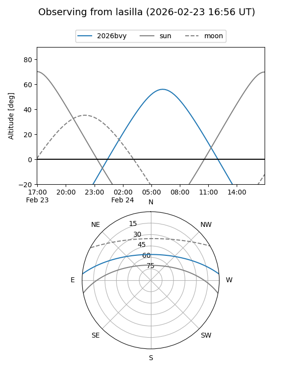
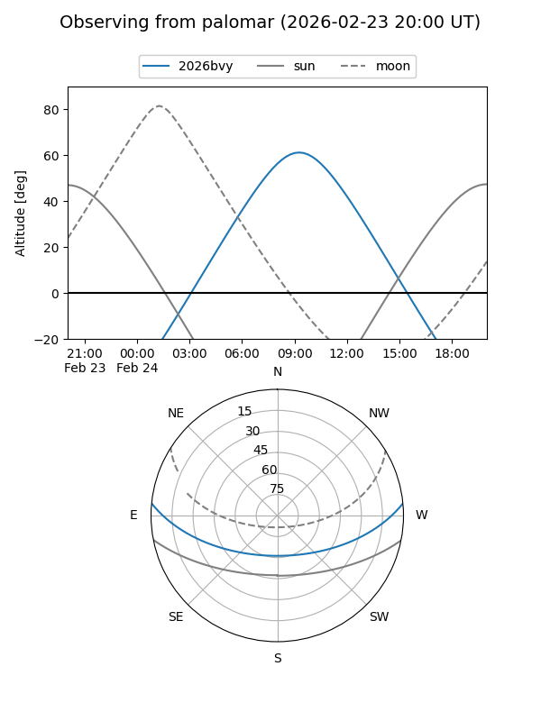

2026bvy
Target 2026bvy at 2026-02-24 09:08
Aliases and brokers:
FINK: link
Lasair: link
ALeRCE: link
TNS: link
YSE: link
alt names
ZTF26aaflrho (ztf,fink_ztf)
2026bvy (tns,yse)
Coordinates:
equatorial (ra, dec) = 176.0753,+4.74515
equatorial (HMS+DMS) = 11:44:18.06,+04:44:42.53
galactic (l, b) = (264.4051,+62.48303)
Flags:
likely cv
Photometry:
last ztfg=19.57, ztfr=19.13
2 ztfg, 1 ztfr detections
Lightcurve

Visibility


Additional plots